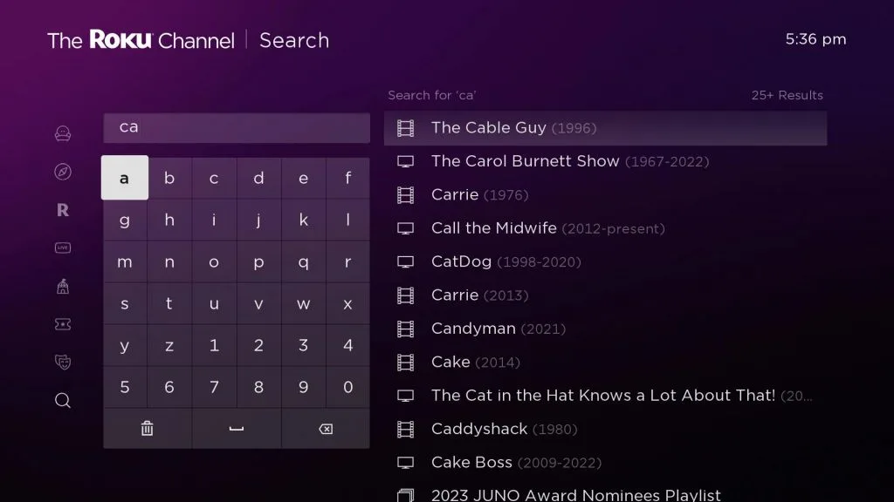
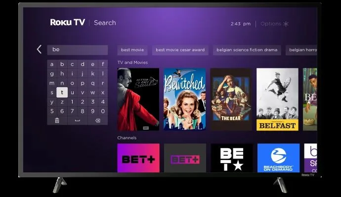
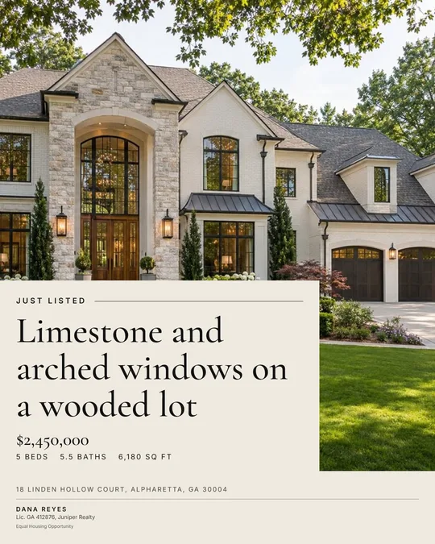
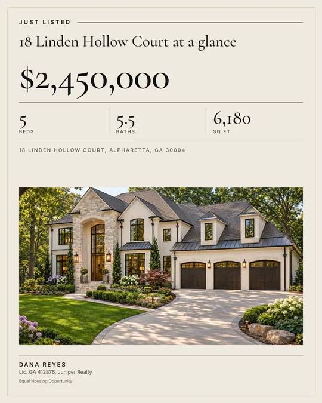
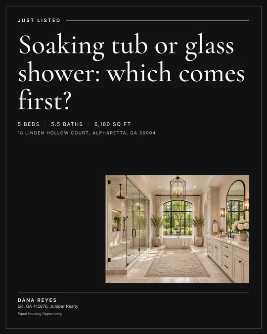
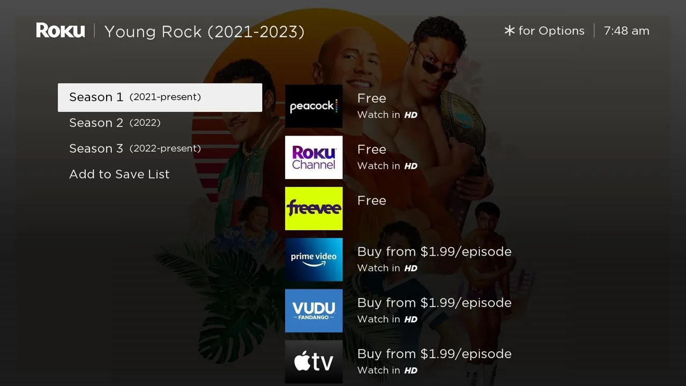
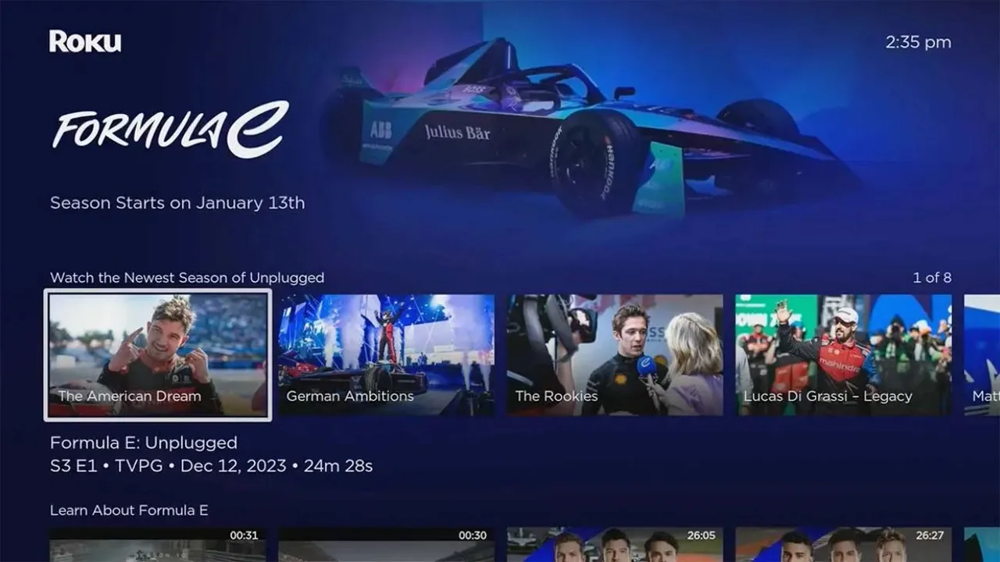

I build the systems that let teams ship accessible, well-crafted UI.
I’ve spent 10+ years between design and code. I built more than 100 prototypes as Roku’s founding UX engineer, and now work on the open-source Auro Design System at Alaska Airlines. I care about the parts users feel: focus, keyboard, motion, small screens, and getting the details right.
-
- Where
- Alaska Airlines
- When
- 2024 to now
Form components and accessibility at Alaska Airlines.
Close Clear Destination Flying to Anchorage (ANC) Atlanta (ATL) Honolulu (HNL) Los Angeles (LAX) Portland (PDX) Seattle (SEA) San Francisco (SFO) No matching airport auro-combobox, live -
- Where
- Roku
- When
- 2021 to 2023
Search engagement rose 40% after the first release and another 10% after the second.
-
- Role
- Founder
- When
- 2026
A product I designed and shipped myself, built with AI coding agents.
-
- Where
- Verkada
- When
- 2023 to 2024
Led the cross-team project to bring the product up to the latest WCAG.
From Figma file to airline product
Five design systems in, I work on every step between the design file and the product.
Figma
Figma Code Connect links the design file to the code.
Manifest
Strict manifest checks run on every build.
Components
Input, select, combobox, datepicker, counter and menu, all on one shared dropdown.
Tests
iterate()runs an accessibility check on every test iteration.Products
Alaska and Hawaiian Airlines’ web products.
Auro Design System
The open-source Web Components library behind Alaska and Hawaiian Airlines’ web products. I helped build auro-formkit, its form package, and wrote 197 of its pull requests: input, select, combobox, datepicker, counter and menu, all built on one shared dropdown.
- Rolled out a new component registration API to 37 repositories. Then added an
appearanceattribute and deprecatedondarkacross 15 repositories. - Built mobile fullscreen layouts, focus return and focus trapping into the dropdown, so every form control gets them.
- Added an
iterate()test helper that runs an accessibility check on every test iteration. - Rebuilt the drawer on FloatingUI and moved the dialog to the browser’s native dialog and popover. Added strict manifest checks to builds, and Figma Code Connect.
Try it live below auro-formkit on GitHub
Lit, Web Components, Shadow DOM, SCSS tokens, FloatingUI, Web Test Runner, axe
Live: Auro form components
These are the real, published components from @aurodesignsystem/auro-formkit, not screenshots. Try them with a keyboard (Tab, arrow keys, Enter, Escape) or a screen reader. On a phone-sized screen they open fullscreen.
auro-datepicker range
auro-select
The components load when this section scrolls into view.
auro-formkit 6.2.2, © Alaska Air, Apache-2.0. I’m one of the package’s contributors. The team built it together.
Roku UX Engineering
Roku’s only UX engineer for the first two years. I built the prototyping platform, component libraries, tools and 100+ prototypes from scratch. Designers and researchers used them for usability studies and executive demos. I then grew the team from 2 to 7.
- Led the Search redesign from prototype to production in React. Search engagement rose 40% after the first release and another 10% after the second. Case study
- UI for smart home devices, the voice assistant, Roku Pay and the new Home screen.
- Reusable patterns with built-in accessibility and localization. Figma plugins for the design team.
- Named on US Patent 11,178,464, audio search results in a multi-content source environment.
Vue, React, Node.js, Storybook, AWS, Kubernetes, Figma plugins

Before
After


Listriva
Ready-made marketing kits for real estate agents: five distinct social graphics, captions and a print-ready flyer for $9, or a branding kit for $15. Guest checkout, instant download, no account.
- Designed two systems: a locked design system for the app (tokens, components, voice rules) and one for the generated graphics (5 styles, 8 layouts, rules so each kit looks different, 300 DPI print PDFs).
- A truthfulness guard: generated copy can’t invent facts, sales figures or awards.
- Built in under a week with Claude Code. I set the direction, then reviewed and merged every pull request.
SvelteKit, TypeScript, Tailwind, Supabase, Stripe, Playwright
Web Foundation
React, TypeScript, GraphQL, Storybook
- Made the web platform faster and more stable, with a better developer experience: a multi-package monorepo, lazy compilation, accessibility linting and unit test infrastructure.
- Built a central design system library so accessibility and localization live in the shared components.
- Led the cross-team project to bring the product up to the latest WCAG.
- Defined a new project lifecycle with PM, design and other engineering managers.
How I work
Accessibility is a default
If people have to remember to add it, it gets forgotten. I build it into components, tests and CI so every team gets it for free.
Prototype to decide
A working demo settles a design argument faster than a spec does. I’d rather put something real in people’s hands early.
Craft lives in the edge cases
The virtual keyboard, the focus after close, the 320px screen, the long label. That’s where interfaces feel finished or don’t.
Speak design and code
I started as a designer. I read Figma like code and code like a design file, and I build the bridge between them.
Data beats gut feeling
I tie UX work to the numbers product and leadership already track, so craft gets prioritized.
Tell the truth in the product
Copy, states and limits should be accurate. I’d rather show a known limitation than oversell a feature.
Case studies
How I approach problems. Each one: the situation, my move, and what happened.
-
One dropdown under every form control
Alaska Airlines, auro-formkit
2024 to 2026- Situation
- The form components had just moved into one package. Select, combobox, datepicker and counter all open a popup, and each needs the same behavior: positioning, a mobile layout, focus and keyboard handling.
- Move
- I moved select, combobox and datepicker onto the package’s own internal dropdown. Then I built shared behavior into that one dropdown:
- a fullscreen mode on small screens
- slot names that match across components (a planned breaking rename for the datepicker)
- accessibility logic in one place
- focus return to the trigger and a focus trap while it’s open
- Details
- Mobile is where the edge cases live:
- the virtual keyboard pushing the fullscreen view off screen
- event listeners lost when content moves into the fullscreen slots
- values not updating while fullscreen is open
- scroll needing to lock behind it
- Result
- Select, combobox, datepicker and counter-group share one tested set of behaviors. In May to July 2025 I filed 11 critical and serious axe violations against the package, and 9 of them are now closed.
-
Making search work without a keyboard
Roku, Search redesign
2021 to 2023- Situation
- At the end of 2021, Roku users streamed 73.2B hours a year, but only 1.8% of users streamed from Search, and only certain titles got played from it. People hate typing with a TV remote. The goal was more streaming hours and more titles played from Search.
- Move
- I worked with design from ideation: research on users’ pain points, a low-fi prototype on existing backend services, then a high-fi prototype with 2 to 3 design variants for usability research. The MVP stage had no PM and no backend support, so I set priorities with a user-journey map and built a quick mock backend. The final design added autocomplete keyword suggestions and recommended content, with image-rich screens.
- Build
-
- I architected and built the new Search screen in React instead of BrightScript, so the prototype code could be reused.
- I built temporary components until the platform SDK team’s were ready, and designed mock API responses to align the teams on the final API contract.
- Image transitions degrade gracefully on low-end devices.
- Each phase rolled out through A/B tests at 10%, then 50%, then full release.
- Result
-
- In prototype testing, 7 of 8 users found what they were looking for without delay, and all of them preferred the new design.
- Search engagement rose 40% after the Search screen launched (2022 Q3), and another 10% after the new detail screen (2023 Q4).
- The stream rate from Search went from 1.8% to 2.7%.

Before
AfterThe detail screen, shipped in the second phase. -
Pivoting a product in three days
Listriva, product and design
2026- Situation
- The first version published social posts for agents. It depended on Meta’s platform, which only let approved tester accounts connect while the app was in development mode.
- Move
- First I shipped an Instagram-only beta with a request-access flow. Then I removed the dependency entirely: finished kits, no accounts, one-time payment, delivery by email. The old product is archived on its own branch with recovery steps.
- Result
- Two priced products are live with Stripe payments and delivery by email. A 3-pack, a referral program and video reels are in progress on branches.
-
Making the screensaver worth watching
Roku, prototyping
- Situation
- Screensaver ad revenue was falling. Research showed people found it boring and had no reason to engage with the ads.
- Move
- I reframed the goal from “more ads” to “more engagement”: a character you can walk through Roku City, coins you redeem through Roku Pay, ads that react when you interact, and themes from ad partners.
- Result
- I built it as a Roku app, tested and tuned its performance, and presented it at a convention to collect feedback. The screensaver engineering team then turned it into a product, and it launched in 2026.
-
Putting a number on a loading placeholder
Roku, prioritization
- Situation
- Images on the screen loaded in a static way that made the screen feel frozen. A small UX fix like this needs a business case to compete with feature work.
- Move
- I followed the customer journey (“I want to browse what to watch”) and gathered published research, a survey and user testing. At the US average connection speed of 18.75 Mbps, the full screen took 3.22 seconds to load, with a 13.82% bounce rate and a satisfaction score of 2.19 out of 5. With placeholders, the perceived load time dropped to 2.4 seconds and the estimated bounce rate to 10.96%, down 2.86 points.
- Projection
- About 772K users retained, 686.4M more streaming hours, and $212.5M in revenue. These are my own planning estimates, not measured results.
-
Paying for a framework migration with a resource “tax”
Roku, Vue 2 to Vue 3
Technical leadership- Situation
- A framework bug forced workaround code into every app. Moving to Vue 3 meant every app, the platform and the libraries had to move together. The team was already running three major projects, and the migration kept losing to work with more business impact.
- Move
- I stopped treating it as its own project. Each roadmap project got a 25% migration “tax” in its estimate, so the migration moved forward piece by piece inside work that was already funded.
- Result
- The plan made room for 7.5 weeks of migration work alongside 30 weeks of roadmap work, without new headcount and without freezing the roadmap.
Experience
| When | Where | Role | What |
|---|---|---|---|
| 2026 | Listriva | Founder | Real estate marketing kits, designed and built end to end. |
| 2024 to now | Alaska Airlines | Senior Frontend Engineer (contract) | Auro Design System: form components, accessibility, theming for the Alaska and Hawaiian merger. |
| 2023 to 2024 | Verkada | Manager, Frontend Web Foundation | Web platform, design system, WCAG and i18n. |
| 2017 to 2023 | Roku | Founding UX Engineer, then Manager, UI/UX Engineering | Built UX engineering from scratch and grew the team from 2 to 7. |
| 2016 to 2017 | Samsung Research America | Staff UI Engineer | Smart TV prototyping and a unified UI component kit. |
| 2015 to 2016 | Memebox USA, Bizlol | Lead Frontend Engineer | Moved an e-commerce site off Magento and made it 80% faster. |
| 2011 to 2015 | LG Electronics | Frontend Engineer | UI framework and Home for LG’s 2013 and 2014 Smart TVs, in 44 languages. |
| 2008 to 2011 | Actone, Virtual Builders | Frontend & Research Engineer | IPTV stock widgets and 3D building apps. Started as a UX designer. |
- Education
- Soongsil University, Seoul. B.E. in Media Engineering and B.A. in Business Management.
- Recognition
- US Patent 11,178,464. Paper and exhibit at ACE 2007, Salzburg: the interactive installation Dream of Peter Pan.
- Toolbox
- TypeScript, Lit and Web Components, React, Vue, Svelte, CSS and design tokens, Storybook, Figma and Code Connect, WCAG and i18n, Playwright.